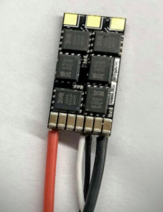

POSTECH ICT V+ 4.0 매칭 기업 ISON 2021-04-26 Drone System Implementation
ISON 개발 관련 목차
- 2021-03-02 ISON Meeting_1
- 2021-03-24 ISON Meeting_2
- 2021-04-07 ISON Development: Error-State Kalman Filter_1
- 2021-04-07 ISON Development: Error-State Kalman Filter_2
- 2021-04-26 ISON Development: Drone System Implementation
- 2021-05-10 ISON Development: Drone Control (1)
- 2021-06-10 ISON Development: Drone Control (2)
- 2021-07-23 ISON Internship
- 2021-08-25 ISON Internship final
- 2021-09-24 ISON Semester2 Plan
- 2021-10-07 ISON Motor Controller Implementaion
- 2021-10-26 ISON Meeting_3
- 2021-10-26 ISON Nonlinear Disturbance Observer
11주차, 드론 제작(21.04.26~21.05.07)
드론 부품이 모두 도착하여 ICT V4.0 과제 목표인 드론 스테이션 충전 패드 소형화 연구를 위한 드론 제작에 돌입하였다. 필요한 물품은 아래와 같다.
- ESC 4개
- Power Distribution Module
- Brushless Motor (CW 2, CCW 2)
- 드론 프레임 (3D 프린팅)
- Flight Controller (FC)
- 배터리
- ESC (Aikon AK32 35A 4S)
AK32 35A 4S은 서보모터를 제어하기 위한 ESC(Electronic Speed Controller)로 48MHz에서 STM-32F-0 Cortex M0를 사용하는 ESC를 제어하기 위한 Firmware BLHeli32 가 다운로드 되어있으며, 48KHz까지 PWM 신호 생성이 가능하다.

AK32 35A 4S의 실물 사진
- Power Distribution Board (PDB-XT60)
LiPo 배터리의 전원을 ESC 공급하기 위한 PDB (Power Distribution Board)로 카메라나 LED 등을 연결하여 쉽게 사용할 수 있도록 12V 및 5V를 쓸 수 있는 BEC (Battery Eliminator circuit)도 탑재되어 있다. 일종의 Regulator라고 생각하면 된다.
입력 배터리를 4S을 연결할 경우 출력 전압은 아래와 같다.

입력 배터리를 3S를 연결할 경우 출력 전압은 아래와 같다. 우리의 경우 3S LiPo 배터리를 사용할 예정이므로 Output Voltage는 LiPo voltage -1V로 기대할 수 있다.


PDB-XT60 실물사진

사용하는 ESC인 Aikon AK32 35A 4S와 결선은 위와 같이 이루어지며 편의상 위를 바라보고 있는 ESC를 0번 ESC라고 하겠다.
PDB-XT60을 통해서 배터리로부터 입력 받은 전압을 분배하여, 각 ESC로 인가한다.
- Motor
드론의 추력을 만들어 내기 위한 Motor는 4X Racerstar Racing Edition 1806 BR1806 2280KV 1-3S Brushless Motor로 선정하였다.

빨간색 캡 - CCW, 검은색 캡 - CW
모터의 Specification은 아래와 같다. 이중 우리가 사용할 모터는 2280KV 모델이다.

Description:
Brand: Racerstar
Item name: BR1806 2280KV Brushless Motor
RPM/V: 2280KV
Height: 26mm
Width: 23mm
Shaft diameter: M5
Motor mount hole size: M2
Weight: 20 grams
Voltage: 1-3S
Battery: 1-3S lithium polymer
Internal resistance: Ω
Usage: for 250 260 Multirotor Frame Kit
CW screw thread motor comes with red cap
CCW screw thread motor comes with black cap
Brushless Motor모터는 다상 교류에 의한 회전자계에 의해서 회전한다.

주황색 화살표가 모터의 회전이라고 생각하면 된다.
모터는 다음과 같이 인버터와 연결이 되고, 제어 명령에 따라서 모터를 회전 시킬 수 있다.

https://m.blog.naver.com/paynoh/221322336204
전류 제어용 인버터의 단순도는 아래와 같다.

https://m.blog.naver.com/paynoh/221322336204 http://motioncontrol.co.kr/default/news/?nwsid=n3&uid=9870
위와 같은 브릿지 회로를 이용하여 모터의 회전자계를 발생시켜서 모터를 제어한다. 스위칭 속도는 모터의 속도를 결정하고, 전류의 세기는 모터의 토크를 결정 짓는다.
ESC는 위의 전류 제어용 인버터의 역할에서 나타난 회전자계 발생을 담당한다. FC에서 ESC로 RPM 명령을 보내면 해당 RPM에 맞추어 회전자계를 발생시켜 모터의 회전을 만든다.

https://ev-engineer-student.tistory.com/38 https://m.blog.naver.com/PostView.nhn?blogId=lagrange0115&logNo=220611637281&proxyReferer=https:%2F%2Fwww.google.com%2F
간단한 RL circuit 전동기는 아래와 같다.

https://x-engineer.org/graduate-engineering/electronics/circuits/rl-circuit-detailed-mathematical-analysis/ https://ctms.engin.umich.edu/CTMS/index.php?example=MotorSpeed§ion=SystemModeling
KVL(the sum of the electrical voltage across the loop is zero)을 적용한 폐회로의 전압방정식은 $V=Ri+L{di \over dt}+E$ 이다. 여기서 $V$는 입력 전압 $E$는 역기전력이다.
모터에서 발생하는 토크는 $T=J{dw\over dt}+bw+T_L$ 이고, $w$는 모터의 회전속도이고 $T_L$은 부하토크이다.
여기서 $E=k_ew_m,T=k_ti$이고, $k_e$는 역기전력 상수, $k_t$는 모터 토크 상수 이다.
여기서 부하토크 $T_L$을 무시하고, $i, w, \theta$를 상태변수로 하는 상태공간 방정식을 세우면 아래와 같다.

http://ktword.co.kr/abbr_view.php?m_temp1=5975
출력을 속도로하여 아래와 같이 설정하면

아래와 같은 전동기 구동시스템의 블록선도를 그릴 수 있다.

전동기 구동시스템의 블록선도를 시스템 $G(s)$로 하여 다음과 같은 PID 제어기를 이용한 전동기 제어기를 구현할 수 있다.

위와 같은 모터 제어 시스템을 설명한 이유는 추후 있을 드론 제어기 설계에 대한 이해를 돕기 위함이다. 우리는 여기서 Reference $r$을 드론의 위치 $x,y,z$와 yaw $\psi$를 입력으로 하여, ESC에 명령하기 위한 RPM을 출력으로 하는 제어기를 설계할 예정이다.
- 드론 프레임
FC와 ESC, 모터, PDB가 고정될 드론의 Body는 아래와 같이 모델링하여 3D 프린터로 출력하였다.

FC와 PDB를 보호할 커버는 다음과 같이 모델링 하여 3D 프린터로 출력하였다.

프로펠러를 보호할 가드는 아래와 같이 모델링하여 출력하였다.

- FC
ARM Cortex M7을 CPU로 탑재한 ST사의 STM32H743IIT6 마이크로프로세서를 이용하여 FC를 구성하였다.
Datasheet:https://datasheetspdf.com/pdf/1337528/STMicroelectronics/STM32H743II/1
센서 및 기타 칩셋
- ICM-20602 (3-axis gyroscope, 3-axis accelerometer, SPI)
- MMC5883MA (3-axis magnetic sensor, I2C)
- LPS33HW (Barometor, SPI)
- FT230X SSOP (USB 2.0 Uart Interface)
- E01 ML01SP4 (2.4ghz Wireless Commuication, SPI)

위의 칩셋과 마이크로프로세서를 인터페이스 하여 Inertial Navigation에 필요한 정보를 수집하고 Ground Control Station (GCS)과 통신이 가능하도록 구성하였다.
- 배터리 (PT-B2200N-SP35)
배터리는 3S, 11.1V, 45C+를 선정하였다.

아래는 해당 배터리의 Specification 이다.

- 제작
다음은 1~6에서 설명한 드론 제작용 부품을 이용하여 남땜, 조립하는 과정이다.

가장 먼저 3S LiPo 배터리와 연결할 PDB-XT60의 배터리 단자를 납땜하였다.

이후 PDB-XT60을 3D 프린터로 출력한 드론 바디에 연결하였다.

이후 ESC에 전원선을 납땜하고, ESC의 T를 모두 STM32H743IIT6의 PB8 (RX)와 연결하고 각 S를 PA8~11(GPIO out)로 연결하여 DShot1200 프로토콜을 이용한 FC-ESC 간 통신을 준비한다. 이후 ESC의 ABC 상을 모터와 연결한다. 이때, CW 모터에는 ESC의 ABC out을 모터의 ABC in에 맞추어 연결하고, CCW 모터에는 ESC의 ABC중 B와 C를 교차하여 모터의 ABC in에 연결한다.

이후 모션 캡쳐 시스템에서의 측위를 위해, 반사 마커를 추가하였다. 드론은 Symmetric한 구조이기 때문에, 중앙부에 방향을 구별하기 위한 마커를 추가하여 총 5개의 마커를 사용하였다.
다음 포스팅에서는 아래 연구개발 일정에 따라서 드론 비행을 위한 제어기와 동역학적 이해에 대한 포스팅이 추가될 예정이다.